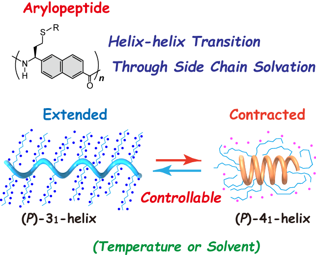
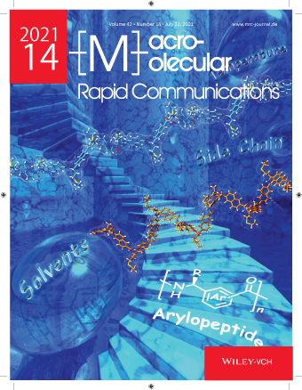

これまで当研究室では、不斉重合反応と重合後変換を組み合わせることで、主鎖にアリレン骨格を有する新しい非天然型ポリペプチド（"アリロペプチド"）を合成し、それらが溶液中で安定な一方向巻のらせん構造を形成することを明らかとしている。特に、主鎖に2,6-ナフチレン骨格を有する場合、側鎖置換基に応じてらせんピッチの異なる31および41らせん構造が選択的に形成されることを明らかにしている。本論文では、側鎖の溶媒和を利用することで、2,6-ナフチレン骨格を有するアリロペプチドが形成する2つのらせん構造間で可逆的な構造転移が生じることを明らかとした。様々な側鎖置換基を有するアリロペプチドを合成し、側鎖と溶媒の関係について系統的に調査したところ、溶媒と側鎖の親和性がらせん構造間の選択性に重要であることが明らかとなった。側鎖に長鎖のオリゴエーテル基(R = -(CH2CH2O)9CH3)を持つアリロペプチドを合成したところ、水中で温度に応じて31らせんと41らせん構造間での構造変化が観測された。 更に、側鎖に換基(-(CH2CH2O)3CH3および-C12H25)をランダムに導入したアリロペプチドを合成し、ポリマー全体の溶媒親和性を調整しところ、溶媒の添加により31らせんと41らせんの間で可逆的な構造転移を可能とした。